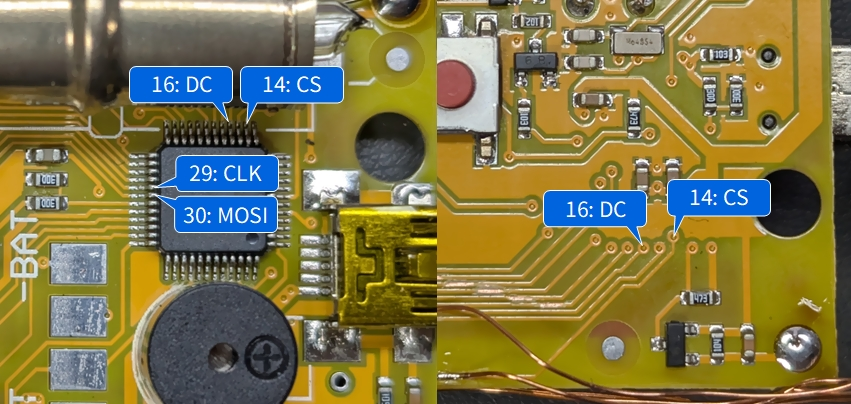

Configuration for SOEKS-01M

High voltage is present near the Geiger-Müller tube. Always turn off the power before working on it.
Using LcdTap-Pico2 Universal
Connection

Configuration
- Load preset for ST7789.
- Set resolution to 128x160.
- Set Format Override to RGB666_LA.
- Set Output Rotation to 0°.